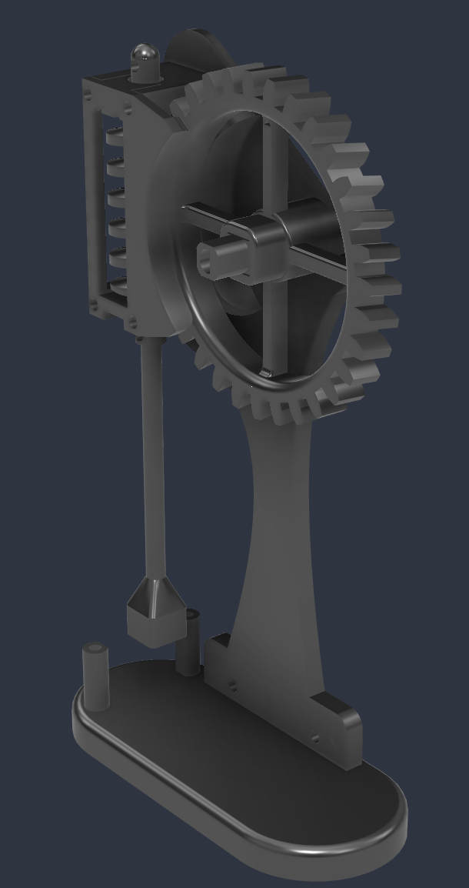
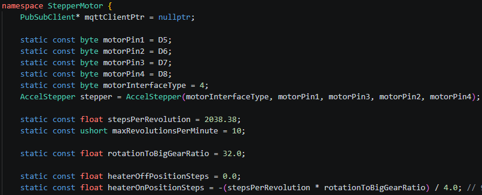
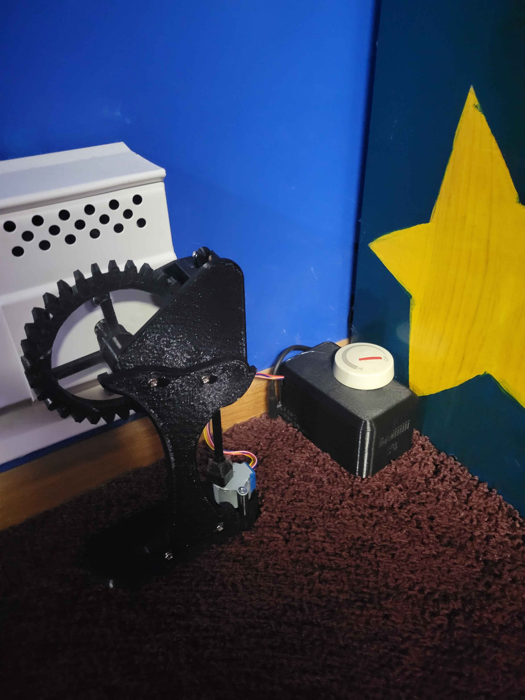

How I turned a normal heater into an IoT device for home automation!
Recently, I decided to undertake a project to convert my room's heater into an IOT device for use with Home Assistant in order to more easily maintain my rooms temperature.
There's many ways to approach this goal, though my idea was to build some device that could automatically rotate the temperature knob and turn it on and off.
On hand, I had an ESP8266 Wi-Fi enabled microcontroller, a stepper motor, and various wiring and power components. After some experimentation, I realized the stepper motor would not be able to directly rotate the knob as it does not have enough torque! The solution to this was to use a gear system to increase the torque of the stepper motor, at the expense of reducing speed.

But how would I get or even assemble any such gears? I wasn't sure either, so I picked up Fusion 360 and learned how to design suitable gears and something to hold them all together! Specifically, I went with a worm gear that resulted in a 32:1 gear ratio, meaning the output shaft has 32 times more torque at the expense of being 32 times slower. For just turning a stubborn knob, the speed actually doesn't matter much! As for how to actually get these gears after designing them, I used a 3D printer to print them at home.
Designing the model for a gear system like this was actually the largest and most challenging part of this project, but it's just one part of many!
After the gear system was designed, I needed to hook everything up to it. I settled on using a 5V 28BYJ-48 stepper motor with a ULN2003 driver board, driven by an ESP8266 microcontroller. The ESP8266 is able to talk to the driver board and control the stepper motor easily. Since the ESP8266 has built-in WiFi, I was able to connect it to the rest of my devices quite easily using MQTT, a simple communication protocol frequently used in IoT devices.

But what exactly would this ESP8266 board talk to over WiFi and MQTT? It talks to Home Assistant! Home Assistant is an open source home automation operating system that allows you to control tons of home devices and even design your own if you are able to program it. Using Home Assistant, I'm now able to talk to the stepper motor over WiFi using my a website or even a phone app!
But, more importantly, I was able to control the heater without any input from me. This means that I'm now able to have Home Assistant control it automatically! Using a temperature sensor in my room from a previous project, I'm able to trivially setup a DIY thermostat for my room and have the heater automatically turn on and off to maintain my desired temperature as needed!
Overall, this might seem like an excessive amount of work to literally just make my room a little bit warmer. I am not disagreeing with that, but it was a fun project and actually positively impacts my daily life. My favorite part so far was having the heater turn on half an hour before I wake up in the morning so I wake up to a nice and warm room even when the weather outside is freezing, it makes getting out of bed so much easier for me. But really, this was a great learning experience!
Below is the final assembly system, featuring the heater istelf, the gear system, stepper motor, and a nice box to hold the ESP8266, with the old heater knob sitting on top:

Hopefully you found this article at least a little big interesting!